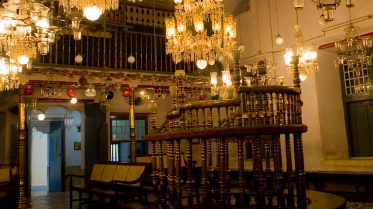
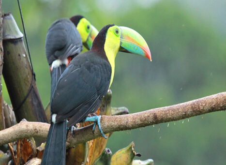

Paradeshi Synagogue Mattancherry
The Paradesi Synagogue, in a corner of Jew Town, is more than a hundred years old and houses many rare antiques. The synagogue, that woos many visitors, adds to the quaint charm of Mattancherry.The Jewish synagogue was built in 1568, almost 1500 years after the beginning of the Jewish connection with Kerala. It was built on the land, adjacent to the Mattancherry Palace, given by the erstwhile king of Cochin.The synagogue, the oldest in the Commonwealth, was built by the Jewish community of Cochin. In 1662, it was destroyed by the Portguese and then reconstructed, two years later, by the Dutch.The word Paradesi means foreigner in many Indian languages. It refers to the White Jews - A mixture of Jews from Kodungalloor, Middle East and Europe.
Thattekkad Bird Sanctuary
Constituted during 1983, Dr. Salim Ali, the world famous ornithologist, is directly responsible for the wonders on display at the Thattekkad Bird Sanctuary. His famous survey of Travancore in the 1930s led to the formation of this modern day paradise for avian life. He noted that the area was rich in bird diversity and ought to be turned into a sanctuary to conserve the same. The over 300 species that reside in these tropical and deciduous forests are testament to his great vision.One can run across the Sri Lankan Frogmouth, Racket Tailed Drongo, Bronzed Drongo, White-bellied Treepie, Shama, Yellow-browed Bulbul, Rufous Babbler, Malabar Parakeet, White-bellied Blue Flycatcher and the Malabar Grey Hornbill in these parts. Beautiful teak, rosewood and mahogany plantations can also be viewed here. It also boasts of over 28 mammal species and over 9 species of reptiles.
Chinese fishing nets / Vasco da Gama Square

The huge cantilevered Chinese fishing nets that that droop towards the waters like over-sized hammocks have become a hallmark that represents Fort Kochi on the tourist map. Once just a fishing accessory, it is a now a big bait for tourists. Chinese fishing nets - Cheenavala in Malayalam - is believed to have been introduced in Kochi by Chinese explorer Zheng He, from the court of the Kubla Khan. The fishing net established itself on the Kochi shores between 1350 and 1450 AD. The sight of the Chinese nets, suspended in mid air and standing in line on the beaches, when silhouetted against the sunset is breathtakingly beautiful. It is, undoubtedly, one of the most photographed sights in Kochi. For the best view of the nets, head to the Vasco da Gama Square, the narrow walkway that runs along the Fort Kochi beach.